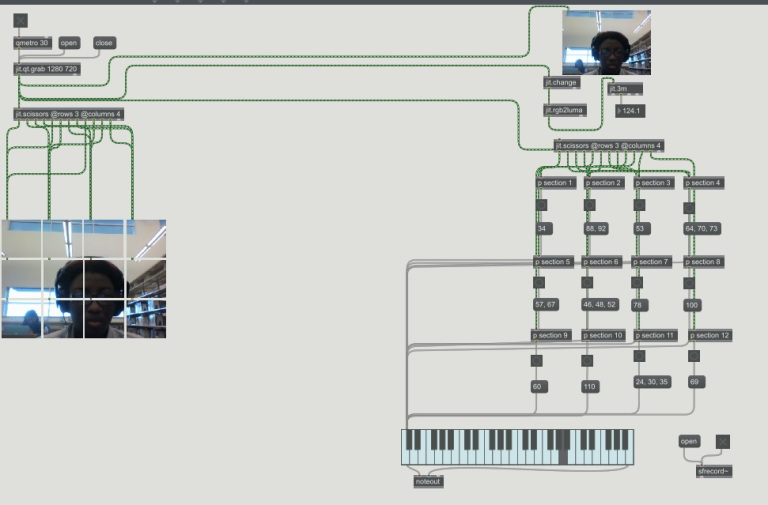

SoundScape
I created a soundscape where your movements or people’s location is based on the people’s movement. When you move a body part or someone moves in a particular location of the 12 windows, then a note will be played so a series of notes can be played based on the movement. I wanted to create an interactive piece that had the freedom to allow for the audience to have fun and to engage with the sounds.
Role: Interactive Designer and Developer
Tools: Camera, Max MSP, Any Space, Speaker